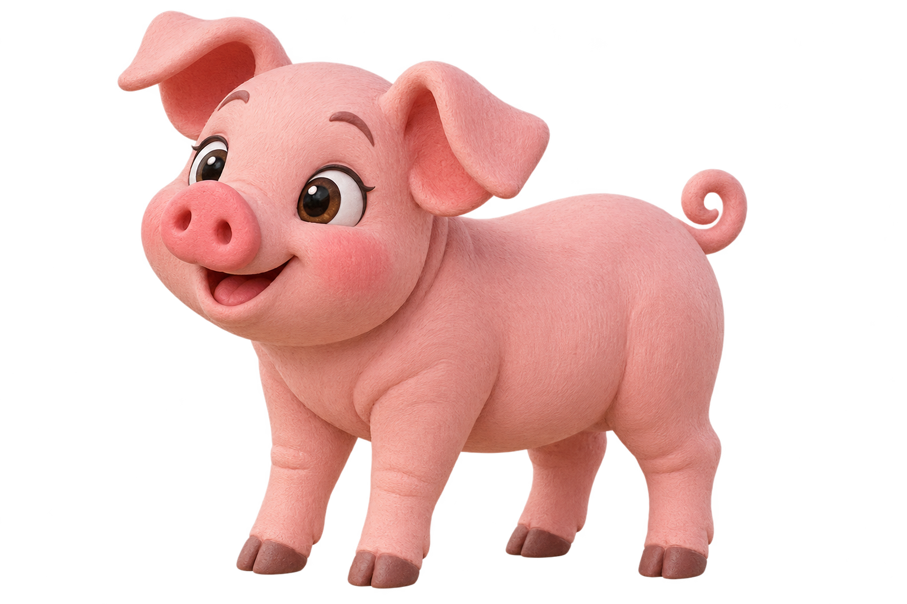

01 / BREEDING
번식돈
건강한 모돈이 다음 세대의 출발점입니다.
- 체형과 사료 섭취를 살피고 급이량을 조절합니다.
- 발정·교배·임신 기록을 개체별로 확인합니다.
- 분만 전 돈방을 청소하고 분만 준비를 점검합니다.
질병부터 사양관리, 업계 동향과 시세까지. 농장에서 필요한 정보를 분야별로 정리한 양돈 실무 지식 허브입니다.
가상 돼지의 상태를 살펴보세요.
체중과 성장 단계가 바뀌면 살펴야 할 관리 포인트도 달라집니다.
돼지코를 드래그하거나 방향키로 옮겨 보세요.
포유자돈 · 출생부터 이유까지 출생부터 젖을 떼는 생후 약 21–28일까지입니다. 초유를 먹었는지 확인하고, 포유 중에는 젖 먹는 모습과 보온 상태를 살펴보세요.
교육용 대표 범위입니다. 실제 체중과 일령은 품종, 사료 프로그램, 농장 관리와 출하 기준에 따라 달라질 수 있습니다.
분만부터 다음 분만까지 이어지는 과정입니다.
돼지코를 드래그하거나 방향키로 옮기면 단계별 관리 포인트가 표시됩니다.
분만 모돈이 자돈을 낳는 시기입니다. 분만 시작 시각과 태어난 자돈 수를 기록하고, 자돈의 보온과 초유 섭취를 확인하세요.
포유 28일, 이유 후 발정과 종부까지 약 5일, 임신 114일을 가정하면 분만에서 다음 분만까지 약 147일입니다. 실제 주기는 농장과 개체에 따라 달라집니다. 검역본부 주간관리 예시 ↗
분만 예정일 = 종부일 + 114일
현장 상황이나 대상 돈군을 기준으로 자료를 찾아보세요.
검색 결과가 없습니다. 다른 단어로 검색해 보세요.
현장 징후를 기록하고, 전파 위험을 줄이고, 필요한 검사를 연결하는 흐름으로 자료를 구성합니다.
질병 자료 살펴보기 ↗식욕, 활력, 호흡, 설사, 폐사 등 이상 징후 확인
돈군, 일시, 증상, 발생 범위와 변화 추이 정리
격리·이동 관리 후 담당 수의사와 검사·조치 결정
각 단계의 그림을 보며 오늘 확인할 관리 요령을 살펴보세요.
가상 돼지는 한국 시간으로 이틀마다 하루씩 자라고, 180일 후 다시 시작합니다. 버튼으로 다른 일령도 살펴보세요.
가상 사례는 교육용이며 실제 성장 속도와 건강 상태는 농장마다 다릅니다.

포유자돈태어난 자돈이 모돈 곁에서 젖을 찾습니다. 한 마리가 뒤처지지는 않는지 확인해 보세요.
이렇게 확인해요초유 섭취와 보온 공간을 확인하고, 활력이 떨어지는 자돈은 담당 수의사와 상의합니다.
관련 교육 내용 보기 ↗해당 시기에 배울 수 있는 별도 예시입니다.
단계별 학습을 위한 예시이며 위 가상 관찰 사례의 원인을 확정한 것이 아닙니다. 비슷한 증상에도 원인이 다를 수 있습니다.
근거 자료 보기 ↗건강한 모돈이 다음 세대의 출발점입니다.
태어난 자돈이 따뜻하게 첫 젖을 먹는지 봅니다.
젖을 뗀 자돈이 물과 사료에 적응하도록 돕습니다.
성장과 건강을 함께 살피며 출하를 준비합니다.
관리 기준은 돈군과 농장 여건에 맞게 정하고, 이상 징후는 담당 수의사와 상의하세요.
피그앤포크 한돈뉴스 · 2026년 11월 16~17일 선별 요약
전담팀을 꾸려 농장별 감염 상황을 검사하고, 결과에 따라 백신을 지원하는 체계를 마련했습니다.
기사 원문 ↗전문가들은 농장 상태를 먼저 파악하고, 그에 맞춰 방역 목표를 정해야 한다고 설명했습니다.
기사 원문 ↗항체양성률이 낮은 대상에 대해 접종 시기와 백신 보관 상태를 점검하고 수의사 현장 지도를 강화합니다.
기사 원문 ↗콘스탄텍의 사료 재고 관리 시스템이 유로티어 혁신상 은상을 받았습니다. 사료 잔량과 소진 시점을 파악하는 장비입니다.
기사 원문 ↗국립축산과학원이 무선 식별표와 3D 카메라를 사용해 모돈별 체형을 파악하고 급여량을 조절하는 시스템을 개발했습니다.
기사 원문 ↗동백팜과 창이농장에서 벽화를 그려 축사 외관을 개선하는 지역 상생 활동을 진행했습니다.
기사 원문 ↗한돈협회는 가업상속공제 적용 확대와 영농조합법인 세제 개선을 추진 과제로 소개했습니다.
기사 원문 ↗대의원회 표결 결과 2027년 농가 거출금은 돼지 한 마리당 1,100원으로 유지됩니다.
기사 원문 ↗다봄의 산지가격과 도체 경락가를 확인하고, 현재 시세를 적용해 농장 손익을 계산할 수 있습니다.
산지시세로 모돈 손익 계산 ↗축산유통정보 다봄에서 시세 보기 ↗